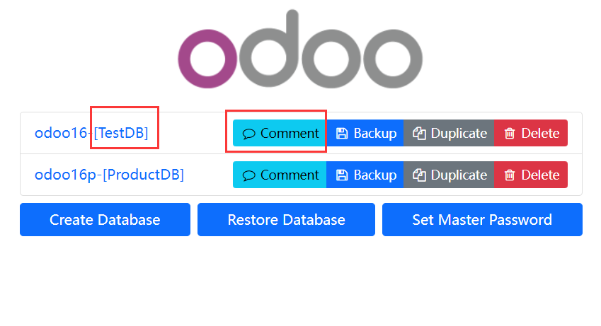
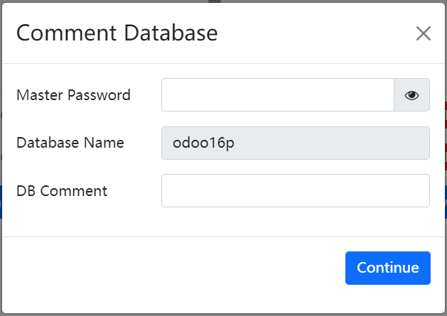
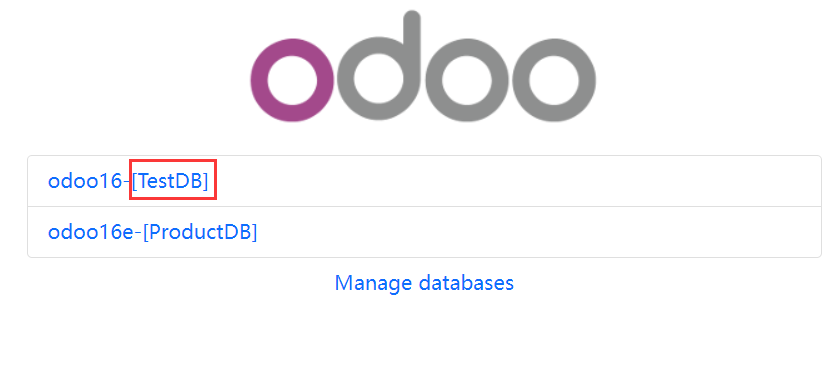

<section class="oe_container">
    <div class="oe_row oe_spaced">
        <div class="oe_span12">
            <h2 class="oe_slogan">>Database Comment</h2>
            <h3 class="oe_slogan">vnsoft.he@Gmail.com(QQ:9181720)</h3>
        </div>
        <div class="oe_span12">
            <p class="oe_mt32">
                This module allows you to add comments to your database.
            </p>
            <p class="oe_mt32">
                Please add 'og_database_comment' to server_wide_modules in odoo.conf
            </p>
            
            
            
        </div>

    </div>
</section>